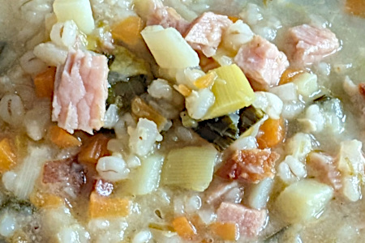

| Zutaten für 6 Personen: | |
| 1/2 | Knollensellerie |
| 2 | Zwiebeln |
| 2 | Karotten |
| 30g | Speckwürfel |
| 80g | Rollgerste, gewaschen |
| Loorbeer | |
| 1.5L | Gemüsebrühe |
| 1dl | Rahm |
| Schinken | |
| Kassler | |
| 1/2 Stange | Lauch |
| 1 Stk | Kartoffel |
| Pfefferminze | |
| Schnittlauch | |
| Petersilie | |
Sellerie, Karotten und Zwiebel in ganz feine Würfel schneiden
Die Speckwürfel in der 2L Pfanne auslassen
Selleriewürfel, Karottenwürfel und Zwiebeln mitdünsten. Rollgerste beigeben. Alles etwa 10 Minuten dünsten. Loorbeerblatt beigeben, gut salzen und pfeffern.
Brühe und Rahm zugeben.
Schinken, Kassler, Speck in dicken Stücken zugeben.
1 Stunde köcheln lassen.
Lauch fein schneiden.
Kartoffeln schälen und in kleine Würfel schneiden.
Lauch und Kartoffeln zugeben und 20 Minuten mitkochen.
Die grossen Fleischstücke herausfischen, in kleine Würfel schneiden und wieder zugeben.
Mit Kräutern verfeinern und abschmecken
https://www.gaultmillau.ch/atelier-caminada/bundner-gerstensuppe
Schmeckt sehr gut! RE, 2024
@LINKBACK_TAG@ @WAKELOCK@